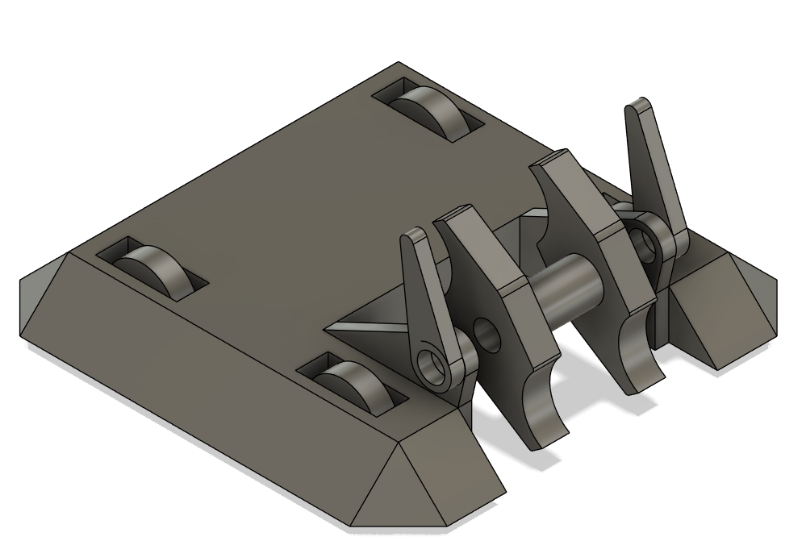
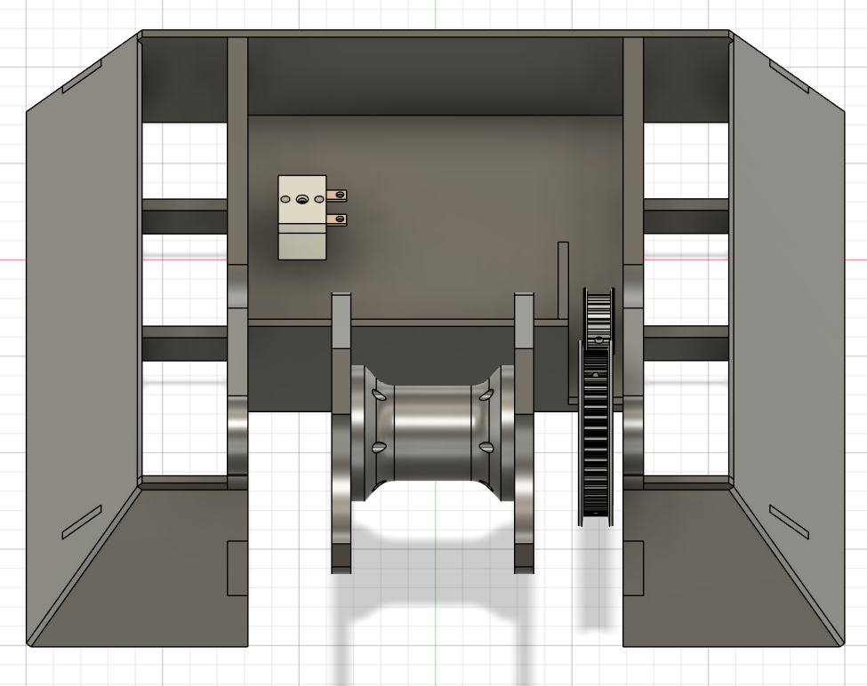
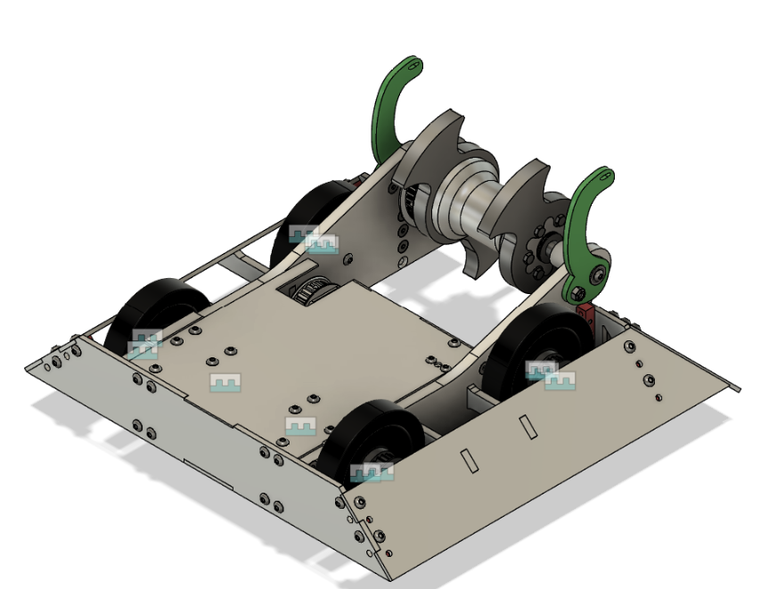
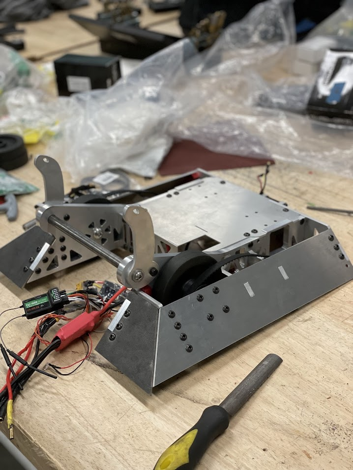
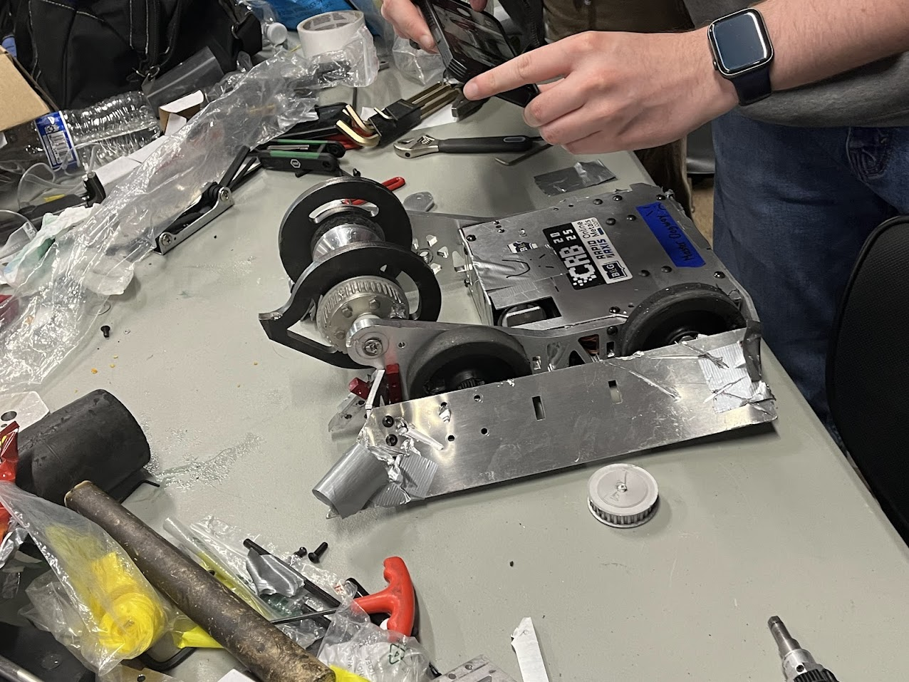

15 lb Combat Robot: "Master Oogway"
Combat Robotics at Berkeley
Overview
Master Oogway is a 15 lb combat robot built as part of the second semester of Combat Robotics at Berkeley. Designed around an asymmetric dual-disk vertical spinner and a belted four-wheel drive, it prioritizes modularity and repairability within a $1,000 budget and the constraints of 2D manufacturing.
- Budget $1,000
- Weapon Asymmetric dual-disk AR500 steel vertical spinner, 1.8 kJ after 2 s spin-up
- Weapon Motor PROPDRIVE v2 4258 500KV, 1.4:1 belt reduction
- Drive PROPDRIVE v2 3536 910KV, 16:1 gear reduction, belted 4WD
- Armor Angled aluminum and steel plates optimized for impact deflection
- Priorities Modularity · durability · manufacturability · serviceability
Design Process

The core architecture was established early: a square footprint driven by the choice of four-wheel drive, an asymmetric dual-disk vertical spinner as the primary weapon to differentiate from prior club builds, belt-driven systems for both drive and weapon, and an all-around angled exterior to deflect incoming hits from any approach angle, carrying forward the principle tested by Eggsterminator at the 1 lb scale.

With a $1,000 budget and access limited to the club's manufacturing sponsors, the design was essentially constrained to flat-plate fabrication. The exception was the dual-disk hub, whose complex geometry required machining and consumed a significant portion of the budget. Every other structural component had to be produced from 2D-cut stock.

After the initial parts came in overweight, aggressive material removal was needed across the board. I was responsible for pocketing every structural component except the armor panels, cutting large relief pockets throughout the frame to reduce mass while preserving key load paths. Even after that pass the robot was still over the limit, requiring further removal: a large chunk milled from the back plate, two of the mid armor mounting supports eliminated, and significantly fewer fasteners than originally specified. Fusion 360's mass estimates had consistently overshot the actual weight, a problem that affected multiple Berkeley teams that season.

I handled most of the non-electronics assembly: installing and torquing fasteners throughout, working out the nut-strip system for armor mounting, and troubleshooting fits as parts came together. I was also responsible for milling the back plate to reduce weight below 15 lbs. During the competition, repairs I conducted included hammering deformed aluminum armor panels flat between matches to make them serviceable again, and performing quick swaps with spares on certain components.
Outcomes & Performance
In the first match, the robot sustained heavy damage leading to us forfeiting the match, but was repaired and made operational again. Middle matches had no major structural issues beyond drive problems. Our matches were won by a few lucky hits, with one instance removing the top plate of our opponent, exposing the battery, and another causing our opponent to become irrecoverably stuck . In the final match, against the same robot in our first match, the robot suffered severe damage but maintained controlled motion to the end; the angled armor deflected impacts that would otherwise have been fatal. Achieved a 3-2 record; was officially awarded "Coolest Bot" and unofficially awarded "Most Destroyed".

Lessons learned:
- Pulley inner diameter must match the motor shaft exactly; any improvised fix only survives a handful of impacts; this was an issue across multiple Berkeley teams that season, and somehow wasn't caught for any of them during design reviews
- Do not rely on Fusion 360 mass estimates; they consistently overshot the actual weight, requiring significant last-minute material removal
- Drive belts needed tensioners; the drivetrain struggled throughout the event
- Drive motors should be mounted to the bottom plate for easier access
- A smaller overall footprint would reduce the need to remove material from the back plate and allow more armor mounting points
- Avoid nut-strips where possible; drilling and tapping directly into the part is worth the extra effort for a more reliable connection
- UHMW or carbon fiber could replace aluminum on low-criticality plates (top, bottom) to recover weight while maintaining or improving rigidity
- Electronics should be rebuilt from scratch to improve routing, serviceability, and to reduce weight